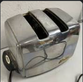
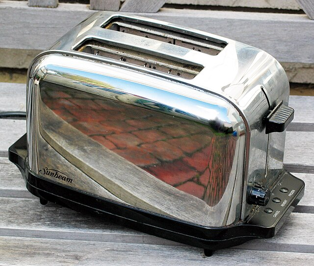
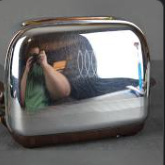

Our Mission
Popular Products
Sunbeam T-35
The T-35, also know as a Radiant Control toaster is considered by many to be the best toaster ever made. While the T-35 is lacking in its aesthetic appeal, it is a durable and functional toaster. Although it was introduced over seven decades ago, the T-35, with proper care, can be used as your everyday toaster.
Sunbeam 1960's Model
Sunbeam toasters from the late 1950's and 1960's are handsome, functional, affordable vintage toasters. They offer more features a modern user would expect in comparison to the utilitarian designs of the 1940's and early 1950's.
Toastmaster 1B12
The Toastmaster 1B12 was an extemely popular toaster in the mid twentieth century. Many of the extant exaples are still in workind condition or can be easily repairws. It's iconic design, afforadbility and sturdy construction make it a favorite of collectors and decorators. Like the Sunbeam T-35 it is considered by its adherents to be the best toasters ever manufctured.
Meet our management team
Bertram Wooster III
Chief Executive Officer
Bertram "Bert" Wooster is the founder and CEO of National Toaster. Bert has passion for mid-century household appliances and is a prominent thought leader and influencer in the toaster collecting industry.
Enid Coleslaw
Chief Operating Officer
ColeSlaw has an MFA from the Pratt Institue of Design and worked as a website designer before assuming responsibility for all administrative and financial functions at National Toaster.
Edmund Frobisher
Vice President of Engineering
Mr. Frobiher has over thirty years experience in small appliance repair and collectibles trading.
Eugene Sutphin

Chief Curator
Eugene (Gene) Sutphin is National Toaster's is Sultan of Style and Brand Ambassador to the toaster collector/dealer community. Gene lives in Baltimore with his wife Beverly.